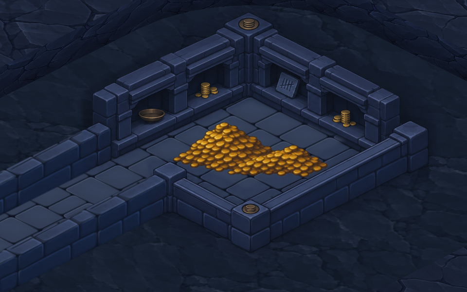
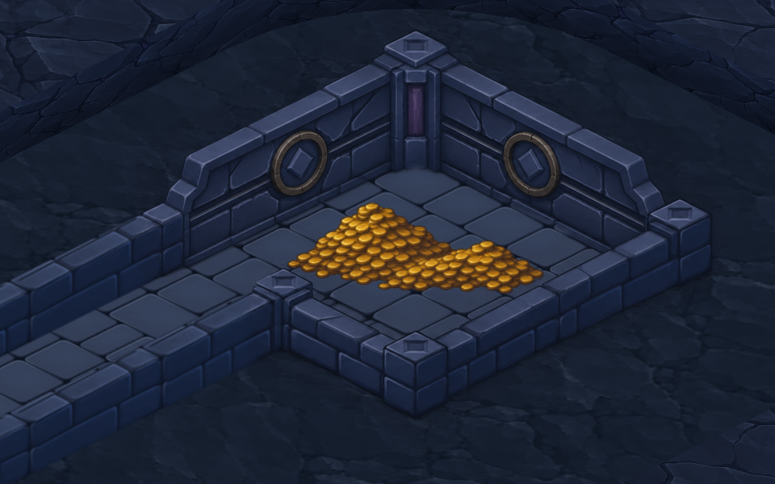

A · La salle des comptes Des niches de comptage sont taillées dans les parois. Leurs linteaux et leurs tablettes font corps avec les rangées de briques.
B · La chambre du tribut Une frise court d’un mur à l’autre. Deux grands sceaux monétaires se lisent de part et d’autre du pilier d’angle.